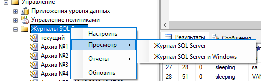
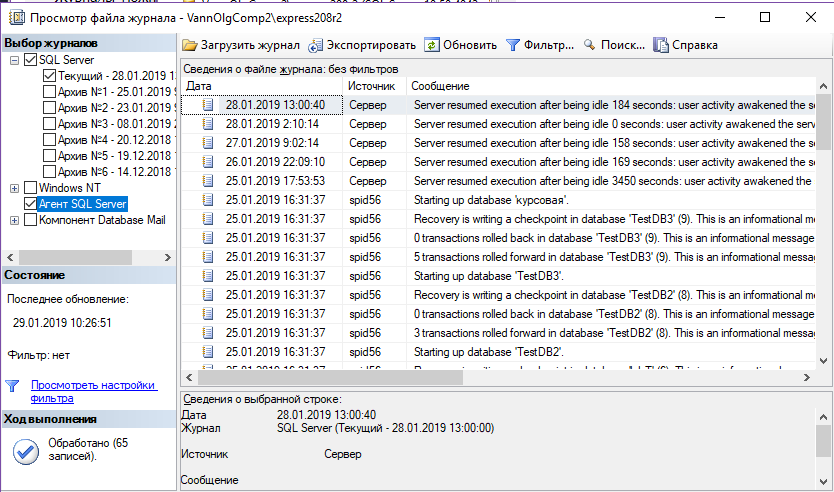

ПРАКТИЧЕСКАЯ РАБОТА №13. РАБОТА С ЖУРНАЛОМ АУДИТА БАЗЫ ДАННЫХ
1. ЦЕЛЬ И ЗАДАЧИ РАБОТЫ
Целью данной работы является получение практических навыков работы с журналами аудита базы данных.
Для достижения цели работы необходимо решить следующие задачи.
- Изучить основные журналы, используемые для отображение событий происходящих с сервером и с его окружением.
- Ознакомиться с основными средствами просмотра данных этих журналов, изучить их возможности.
- Выполнить практическое задание по работе с журналами сервера изученными средствами.
2. КРАТКИЕ ТЕОРЕТИЧЕСКИЕ СВЕДЕНИЯ
При работе сервера необходимо отслеживать и события, связанные с его работой. Главная цель при этом – как можно быстрее обнаруживать проблемы, возникающие на сервере, и оперативно реагировать на них.
Самое простое средство мониторинга работы MS SQL Server 2005 – журналы сервера. Считается, что рабочий день администратора на предприятии должен начинаться с просмотра журналов событий на всех серверах. Для MS SQL Server начиная с версии 2005 выделяются 4 журнала:
- журнал событий самого SQL Server;
- журнал событий SQL Server Agent;
- журнал событий операционной системы Windows;
- журнал событий приложений Windows.
Журналы можно просматривать разными способами. Самый простой и рекомендованный – использовать просмотрщик, который встроен в SQL Server Management Studio. Запустить его можно из контейнера Management| SQL Server Logs (Управление| Журналы SQL Server). В списке журналов нужно щелкнуть правой кнопкой мыши по требуемому журналу и в контекстном меню выбрать View SQL Server Log (Просмотреть журнал SQL Server). Откроется окно просмотрщика журналов (рис. 13.1).

Рис.13.1 Открытие окна просмотра журналов

Рис.13.2 Окно просмотра журналов
При помощи просмотрщика журналов можно просматривать не только журналы SQL Server, но и журналы SQL Server Agent, Windows и Database Mail, можно экспортировать данные из журналов при помощи кнопки Export (Экспортировать), в том числе и в очень удобный для загрузки в базу данных формат CSV, можно настраивать фильтрацию и производить поиск нужной информации.
Журналы событий SQL Server можно просматривать и «вручную», при помощи любого текстового редактора. По умолчанию они находятся в каталоге C:\Program Files\Microsoft SQL Server\MSSQL\LOG. Там же находятся и журналы SQL Server Agent.
Если вам нужен более подробный протокол событий, происходящий на сервере, можно воспользоваться параметром C2 Audit Tracing. Его можно установить на вкладке Security (Безопасность) свойств сервера в Management Studio. В этом режиме в каталоге Data (Данные) для данного экземпляра сервера будут автоматически создаваться текстовые файлы с очень подробной информацией, которая может потребоваться для аудита в соответствии со стандартом безопасности C2.
3. ПОРЯДОК ВЫПОЛНЕНИЯ РАБОТЫ
1. Открыть журнал сервера.
2. Выявить основные события сервера за последние 12 часов.
3. Отобразить события в виде отчета.
4. Выгрузить журнал в текстовый файл и файл «.csv».
5. Определить положение и открыть с помощью текстового редактора файл, соответствующий журналу.
4. КОНТРОЛЬНЫЕ ВОПРОСЫ
1. Какие события могут происходить при работе сервера? Зачем их отслеживать?
2. Каким образом сохраняются данные о событиях сервера?
3. Какие типы журналов сервера выделяются?
4. Какие средства просмотра журналов существуют? Каковы их возможности?
5. Как запустить просмотрщик событий сервера?